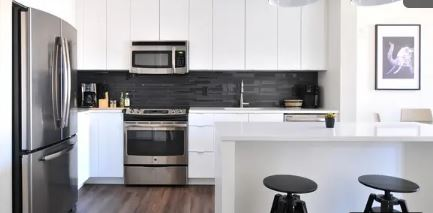
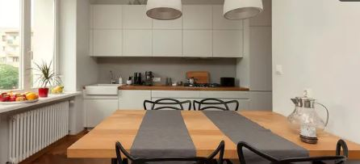
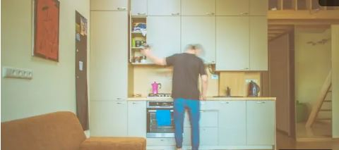

5 Inspirasi Desain Dapur di Apartemen Mungil

Liputan6.com, Jakarta -
Keterbatasan ruang masih kerap menjadi alasan saat akan tinggal di apartemen.
Hal tersebut lantas memberi tantangan penghuni apartemen ketika akan beraktivitas.
Pada apartemen studio misalnya, unit apartemen hanya memiliki satu ruangan tanpa tembok pemisah.
Satu ruangan tersebut sudah mencakup kamar tidur, ruang santai, ruang makan,
hingga dapur. Agar ruangan tidak terasa sesak dan tetap nyaman,
pengaturan ruang apartemen studio perlu dilakukan dengan cerdas,
terutama untuk dapur apartemen.
Anda perlu menata dapur agar dapat memasak dengan nyaman. Apa saja cara mewujudkan dapur apartemen mungil
yang nyaman dan cantik? Simak sederet inspirasinya seperti dirangkum Arsitag berikut ini.
- Ruang Cerah dan Luas dengan Warna Putih

Untuk dapur berukuran mungil, warna putih selalu menjadi favorit bagi banyak pemilik hunian.
Selain dapat memberikan efek ruangan yang lebih luas dan bersih, warna putih juga sangat cocok digunakan
pada berbagai gaya ruangan, mulai dari gaya coastal, industrial, hingga minimalis.
Agar tidak terkesan dingin, Anda bisa menggabungkan warna putih dengan sentuhan kayu. Unsur kayu akan menambah
kehangatan pada dapur mungil putih dalam apartemen Anda.
Namun, pastikan dapur tetap bersih karena kotoran akan semakin mudah terlihat pada warna putih. Jaga kebersihan
dengan selalu membersihkan dapur setiap selesai digunakan untuk memasak, dan jangan menumpuk piring kotor.
- Gunakan Rak Gantung

Keterbatasan ruang kadang kala menimbulkan persoalan bagaimana menempatkan furnitur dan berbagai peralatan memasak di apartemen studio. Inilah saatnya Anda perlu berimprovisasi dengan menggunakan rak gantung.
Manfaatkan dinding apartemen untuk memasang rak gantung sebagai tempat menyimpan berbagai peralatan masak, alat makan, dan peralatan di dapur lainnya. Agar ruangan terkesan lebih lega, Anda bisa menggunakan rak dengan desain terbuka. Letakkan bumbu dapur, botol, gelas, hingga dekorasi lainnya pada rak gantung ini.
- Layout Dapur I-Line

Ingin menempatan kitchen set atau kitchen cabinet pada dapur apartemen mungil? Tentu bisa. Namun, Anda tetap harus memilih model yang sesuai dengan ukuran desain dapur apartemen.
Anda dapat mencoba menerapkan penataan dapur segaris lurus yang disebut layout I-Line.
Layout lurus yang menempatkan material dapur pada satu sudut saja, dinilai tidak akan memakan banyak tempat di dalam apartemen Anda.
Selain itu, dengan menggunakan layout I-Line ini, akan tersedia ruang yang tersisa di bagian tengahnya. Anda pun bisa menggunakannya untuk meletakkan meja makan.
- Tambahkan Sekat Minimalis

Memiliki apartemen studio bukan berarti tidak mungkin untuk menambahkan sekat minimalis di dalamnya. Anda disarankan menambahkan sekat minimalis, apabila Anda membutuhkan privasi yang lebih saat memasak atau tidak ingin dapur mengotori area lainnya pada apartemen.
Terutama, jika sedang ada kerabat atau tamu yang berkunjung. Anda tetap bisa memasak untuk mereka tanpa mendapatkan gangguan dengan dapur yang tersekat.
- Gabungkan dengan Meja Makan

Untuk apartemen mungil, sebaiknya gunakan seluruh ruang yang tersedia sebaik mungkin. Agar menghemat tempat, gabungkan saja dapur dengan ruang makan Anda. Manfaatkan ruang yang tersisa untuk meletakkan meja makan minimalis.
Selain itu, Anda juga bisa memasang kitchen island di dapur mungil apartemen dengan desain dan penempatan yang tepat. Tak hanya memperbanyak ruang untuk melakukan persiapan memasak, kitchen island dapat digunakan pula sebagai meja makan.
Ide dapur mana yang ingin Anda terapkan pada apartemen mungil Anda? Meski mungil, dapur apartemen tetap bisa dibuat senyaman mungkin dengan menerapkan berbagai ide cerdas yang dapat Anda coba.